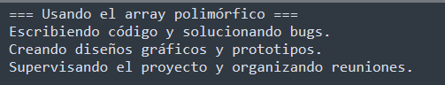
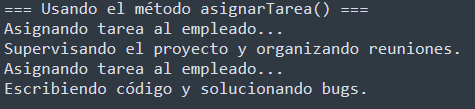

Ejercicio 2: Empleados y sus tareas
Vamos a crear un programa para una empresa, donde diferentes tipos de empleados realizan tareas específicas. Todos son tratados como Empleados, pero su método realizarTarea() se comporta diferente según el tipo de empleado.
1. Crear una clase base llamada Empleado con: public void realizarTarea() → Imprime "Empleado realizando una tarea genérica.".
2. Crear tres subclases que hereden de Empleado:
- Desarrollador : sobreescribe realizarTarea() para imprimir "Escribiendo código y solucionando bugs.".
- Diseñador : sobreescribe realizarTarea() para imprimir "Creando diseños gráficos y prototipos.".
- Gerente : sobreescribe realizarTarea() para imprimir "Supervisando el proyecto y organizando reuniones.".
3. Haz un programa principal que cree un array polimórfico de tipo Empleado[ ] que contenga al menos un desarrollador, un diseñador y un gerente. Recorre todos los elementos del array y llama a realizarTarea() en cada elemento.

4. Crea en la clase de tu programa principal un método asignarTarea(Empleado empleado) → Recibe un objeto de tipo Empleado, imprime "Asignando tarea al empleado..." y llama a su método realizarTarea().
5. En el programa principal, instancia directamente un Gerente y un Desarrollador de tipo Persona (sin usar el array) y pásaselos al método asignarTarea() para comprobar que el polimorfismo funciona al pasar objetos de tipo Persona como parámetros.
